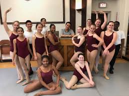
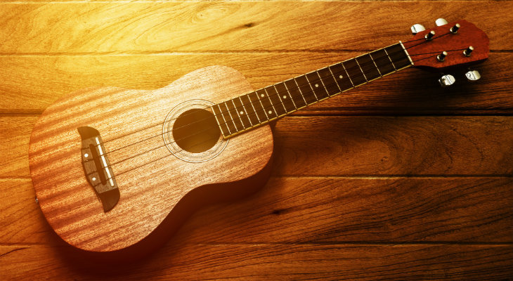
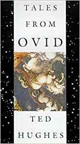

All About Me
A picture of my dance friends and me!
|  |
A ukulele (that looks pretty similar to mine)!
|  |
Tales From Ovid, a book of mythological stories!
|  | |
Basic Facts about me!
- I have been dancing for 11 years, but I've been at my current dance school for almost 10
- I've been en pointe for a little over 3 years
- I was in the Lane Tech academic center
- I took French for 3 years
- I've been outside the country three times: Canada, France, and England
- I went to a theatre summer camp for seven years
- I love music! I can play the ukulele and am learning the guitar
- I'm an only child
- I have a dog named Graham
- My middle name is Grace
- The reason behind this is because in Greek Mythology Thalia is one of the three Graces
- Thalia is also one of the Muses (the muse of comedy)
- Basically, my parents are just giant nerds
Hobbies and Interests
- Dance
- I mostly do ballet and modern dance
- I have two parts in Hyde Park School of Dance's The Nutcracker this year
- I was a lead in one of HPSD's Halloween dances
- I dance at least 3 or 4 times a week
- My normal Saturday lasts from 10:15 till 8:30
- Music
- I've played the ukulele for almost two years
- I've had my Guitar for almost a year, but can only play one or two songs
- I played the flute for half a year around fourth grade, but that ended quickly
- I love to sing, but I think I sound awful
- Theatre
- I'm taking Drama I this year
- I went to Lookingglass's Summer Camp on the Lake for 7 years
- I always get the Broadway in Chicago season pass (I see a LOT of shows)
- Computer Science
- I've taken a CS class every year I've been at Lane
- ESC - Seventh Grade
- Media Comp. - Eighth Grade
- Innovation and Creation Lab - Freshman Year
- Web Dev - Sophomore Year
- I'm also on the Maker's Lab Pro Team (We might rebrand to the Elite Team though)